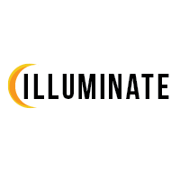

My Projects
Telecommunications Projects
These are a series of projects that I have completed while I've been attending Michigan State University. These projects focus on the Telecommunications aspect of my education and focus more on usable design and prototype applications that I have designed and developed.


Advertising Projects
These projects were also completed while I have been attending Michigan State University. These projects focus more on the concept of the big picture by taking many smaller elements and orchestrating them into effective pieces that have both visual appeal, and a message that communicates with potential customers.

- 